DER C 64 IN FORSCHUNG UND TECHNIK
Ohne Großrechenanlagen ist ein Technik- und Forschungs-Know-how heute nicht mehr denkbar. Aber auch die kleineren Computer haben Ihre Berechtigung in der Forschung und Technik. Wir haben einige Beispiele ausgewählt.
Im Westen von Hamburg, 20 Minuten von der City und zehn Minuten vom Hafen entfernt, ist die größte Rennstrecke Europas für Elementarteilchen, das Deutsche- Elektron-Synchrotron, kurz DESY (Bild 1). Es entand 1959 als eine Stiftung zur Förderung der physikalischen Grundlagenforschung auf dem Gebiet der Atomkerne und Elementarteilchen, Teilchen also, aus denen jegliche Materie aufgebaut ist.
Wozu DESY und was wurde bisher erreicht?
Schon immer interessierte sich die Menschheit dafür, wie die Materie aufgebaut ist und welche Naturgesetze sich dahinter verbergen. Erst in unserem Jahrhundert gelang der Durchbruch auf diesem Gebiet mit der Entdeckung der Radioaktivität, der Spaltung bestimmter Atomkerne in leichtere Atome unter Aussendung von Strahlung und dem Nachweis von Elektronen. Die Erkenntnis daraus war, daß Atome aus einer Elektronenhülle und einem schwereren Kern bestehen. Anschließend begann man die recht kleinen Kerne der Atome weiter zu zerlegen. Man stellte fest, daß diese Kerne aus Protonen, positiv geladene Teilchen, und aus Neutronen, neutralen Teilchen bestehen. Die technische Weiterentwicklung führte zur Entdeckung der Elementarteilchen, eine Reihe kleinster Gebilde mit unterschiedlichen physikalischen Eigenschaften. Die meisten von ihnen existieren nur einen Bruchteil einer Sekunde und Ihr Durchmesser ist kleiner als ein Millionstel eines Milliardstel Millimeters (<10-18m, Bild 2).
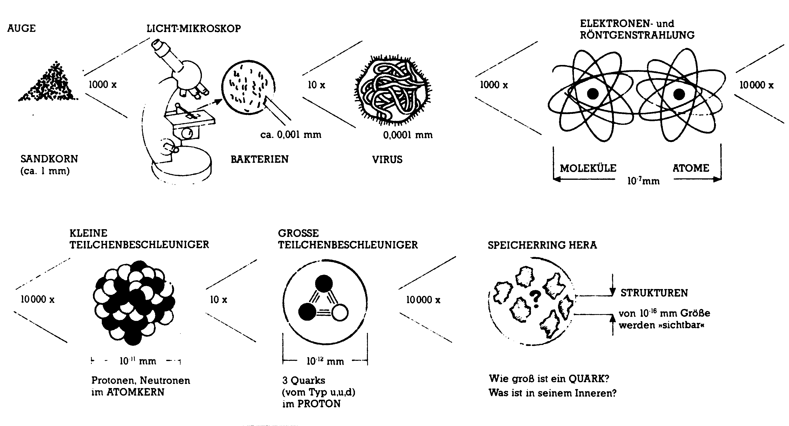
Inzwischen wissen wir, daß die große Zahl der Elementarteilchen (bis heute sind über 300 bekannt) auf einige wenige Bausteine zurückgeführt werden können: auf sechs Quarks sechs Leptonen und deren Antiteilchen.
Jegliche stabile Materie, also auch wir selbst, bestehen nur aus zwei Quarks, dem »Up«- und dem »Down«-Quark und aus zwei Leptonen, dem Elektron und dem Neutrino.
Der Begriff »Quark« ist übrigens ein Phantasiename, entliehen aus dem Roman von James Joyce. Er hat nichts mit dem Milchprodukt zu tun, außer daß auch dieses letztlich aus Quarks und Leptonen besteht.
Aus Drei mach Eins
Wie sind die Protonen und Neutronen aufgebaut?
Ein »Up-Quark« hat eine ungerade Ladung von 2/3 positiv, wogegen ein »Down-Quark« 1/3 negativ ist (Bild 3).
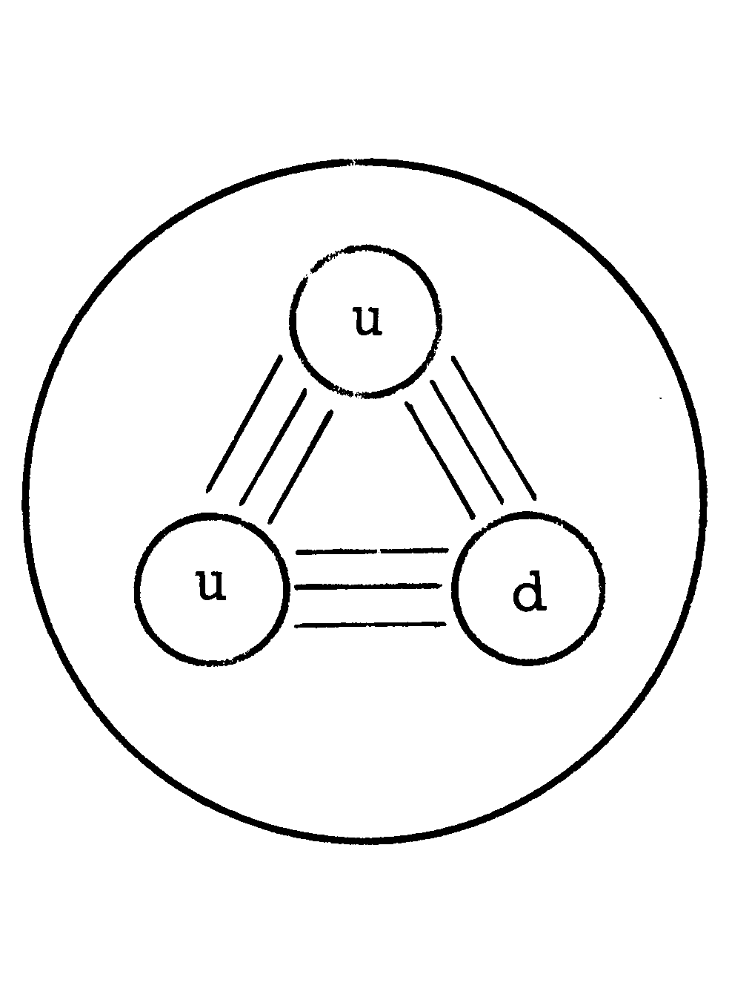
Setzt man ein Gebilde aus zwei Up- und einem Down-Quark zusammen »uud«,
TODO FORMULA
so erhält man ein Teilchen mit einer positiven Ladung von +1, also ein Proton. Ein Gebilde aus »udd« ergibt dann ein neutrales Teilchen (Bild 4).
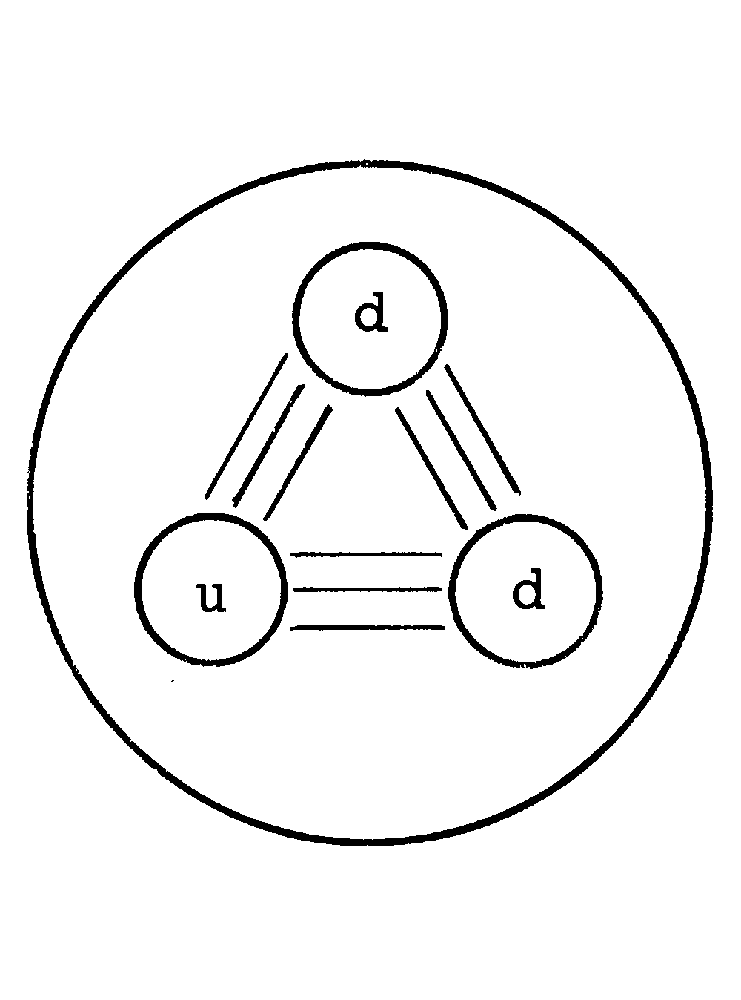
Mittlerweile gibt esjedoch reichlich Hinweise darauf, daß wir wieder einmal vor einer revolutionären Schwelle der Erkenntnisse stehen. Neue Teilchen haben sich zu erkennen gegeben. Aus diesen Gründen hat man sich bei DESY entschlossen eine neue größere Anlage, neben den drei bestehenden zu bauen. Mit der neuen Anlage versucht man den Grundbausteinen, den Hadronen und Leptonen auf die Spur zu komtnen.
Wie ist DESY aufgebaut?
Die Elektronen (Bild 5) werden in einem Linearbeschleuniger LINAC I (220 MeV) erzeugt und vorbeschleunigt, bevor sie in das Synchrotron DESY (7500 MeV) eingeschossen werden. Im LINAC II (450 MeV) werden Elektronen auf ein Target (Ziel) geschossen, wobei Positronen entstehen, die in einen Zwischenspeicher, den PIA Positron-Intensitäts-Akkumulator (450 MeV), gesammelt werden. Ist eine ausreichende Zahl an Positronen gespeichert, so werden sie entgegen der Flugbahn der Elektronen in den DESY-Ring eingeschossen. Im DESY-Ring werden die Teilchen weiter beschleunigt. Sind genügend Teilchen zu einem Elektron- und einen Positron-Paket zusammengestapelt, zirka 100 Milliarden Elektronen und Positronen, werden diese Pakete zum Experimentieren in den DORIS-II-Ring (2 x 5,6 GeV) oder in den größeren PE-TRA-Ring (2 x 23,5 GeV) geschossen. In den beiden Experimentierringen sind Knotenpunkte eingebaut, in denen die Elektronen und Positronen aufeinandertreffen und bestimmte Reaktionen (crash) ausführen. Jede dieser Reaktionen wird als Event (Ereignis) gekennzeichnet.
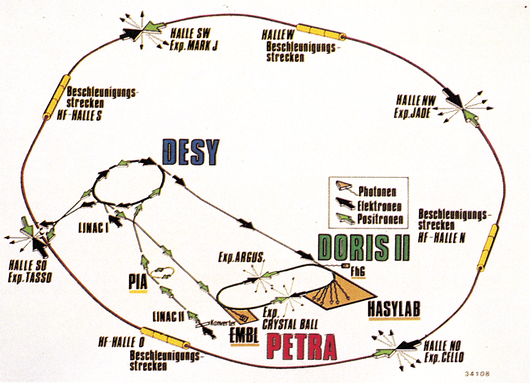
Was passiert bei einen Event?
In dem Moment, wo ein Elektron und ein Positron aufeinander treffen (zirka fünfbis sechs mal pro Sekunde), vernichten sie sich zu einer Art »Energieball«, aus dem dann neue, völlig andere Teilchen entstehen. Das Problem, das bei der Beobachtung eines Events besteht, ist, diese kleinen Teilchen zu lokalisieren und zu identifizieren. Dazu werden um die Kollisionspunkte De-dektoren aufgebaut (Bild 6), die die Flugbahnen der Teilchen, ihre Energie und elektrische Ladung messen (Bild 7).
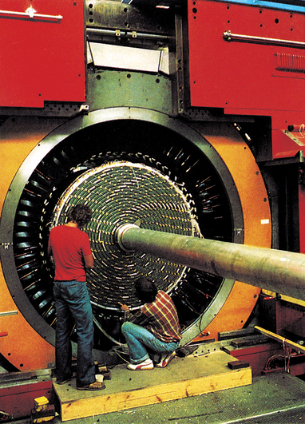
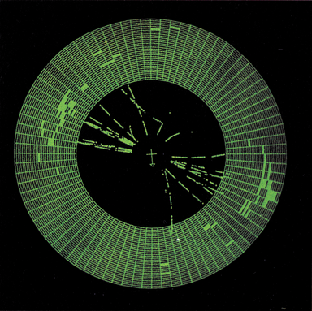
1984 war der erste Spatenstich für die Beschleunigeranlage HERA »Hadronen-Elektronen-Ring-Anlage«. Da die beiden in HERA zu speichernden Teilchen, Elektronen und Protonen sehr unterschiedliche Massen haben, benötigt man zwei getrennte Ringe, einen für die Elektronen und einen für die Protonen. Beide Ringe sind in einem unterirdischen Tunnel von 6,3 Kilometer Umfang untergebracht. Än vorläufig zwei Wechselwirkungsstellen können die Elektronen und Protonenpakete aufeinander gelenkt werden.
Ein C 64 plant am Hera-Ring
In der Grundstruktur besteht der Speicherring aus vier Geraden und vier Viertelkreisen. Die Strahlen liegen aber im Bogen nicht exakt auf dieser Kreisbahn, sondern weichen infolge der Struktur der Führungsmagnete davon ab. Diese Ablage wurde mit dem C 64 errechnet (Bild 8a + 8b).
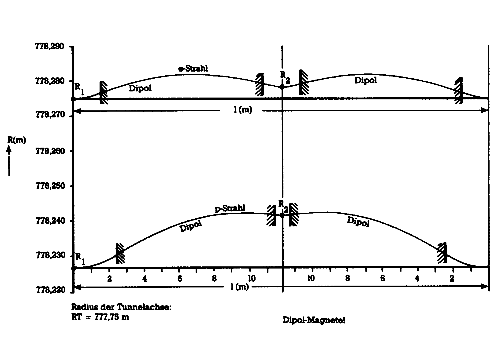
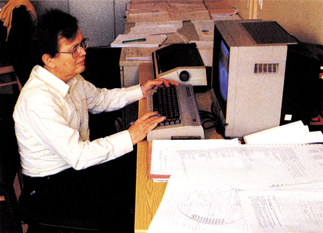
Als weiteres Beispiel aus vielen geometrischen Berechnungen habe ich wahllos die Umrechnung der drei Raumkoordinaten x, y, z eines Punktes im kartesischen System herausgegriffen, die zur Vermessung im Gelände auf die gekrümmte Erdoberfläche bezogen werden müssen.
TODO FORMULAS
r ist der Erdradius, z3, x3, y3 sind die korrigierten Koordinaten.
Die erste Formel korrigiert die Höhe über Normal-Null unter Berücksichtigung der Erdkrümmung, in der zweiten und dritten Formel wird die Projektion auf die Erdoberfläche durchgeführt, welche auf der Höhe Normal-Null liegt.
Auch an anderen Stellen im Institut findet sich ein Kleincomputer in Gestalt eines C 64 oder PET. Daneben finden aber auch eine größere Anzahl von Personal Computern ihren Einsatz. An ihnen werden kleine Rechnungen durchgeführt, um überschlagsmäßig etwas nachzuprüfen oder sich über bestimmte Erscheinungen ein genaueres Bild zu machen.
Der elektronische Notizzettel
Bei den Gesprächen, die ich mit Forschern der DESY geführt habe, stellte sich immer wieder heraus, daß der Kleincomputer seinen berechtigten Platz auch unter Großcomputeranlagen hat. Er dient als elektronischer Notizzettel, mit dem man, ohne auf Rechnerzeit vom Großcomputer zu warten, mal eben eine Überschlagsrechnung durchführt, denn der Großcomputer ist ständig bis zu 100 Prozent ausgelastet. Davon abgesehen entstehen bei Großcomputern durch die hohe Anzahl von Parametern oft seltsame Erscheinungen. So traten zum Beispiel bei der Errechnung einer Resonanzkurve eines Filters (Bild 9) plötzlich viele »Peaks« auf (Spitzen in der Kurve). Nachdem man die gleiche Kurve mit einem Kleincomputer mit einfacheren Formeln nachrechnete, bekam man die geglättete Resonanzkurve.
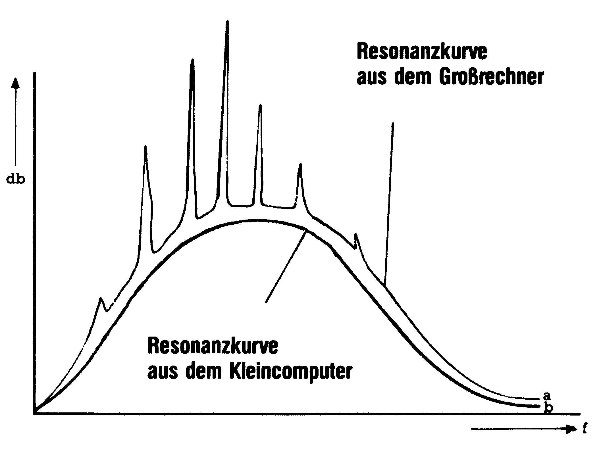
Der Kleincomputer wird für einfache Modellrechnungen dem Großcomputer vorgezogen, genauso wie man einen Taschenrechner für eine einfache Rechenaufgabe dem Kleincomputer vorzieht.
Schon lange vor dem Ersten Weltkrieg begann mit den Pionieren der Luftfahrt die Geschichte um MBB. Aber erst Dipl.-Ing. Dr.-Ing. E. H. Ludwig Bölkow legte die Grundsteine zum Großunternehmen MBB (Bild 10).
Örtlich, bundesweit, weltweit
Die MBB-Industries besteht heute aus 18 Firmen an 11 Orten in der Bundesrepu-bilk und ist über die europäische Verflechtung zu einem weltweit anerkanntem Unternehmen der Spitzenklasse herangewachsen. Das Unternehmen gliedert sich in sechs Unternehmensberei-che: den Apparatebau, Drehflügler und Verkehr, Flugzeuge, Marine und Sondertechnik, Raumfahrt sowie Transport- und Verkehrsflugzeuge.
Um Ihnen den Einsatz des Computers in der Industrie zu zeigen, haben wir aus dem Unternehmen einige wenige, nicht unbedingttypi-sche Abteilungen herausgegriffen und für Sie besichtigt. Wichtig ist, daß die Industrie mit dem technischen Know-how eines Multikonzerns auf Großrechenanlagen angewiesen ist.
Trotzdem finden an einigen Stellen auch »kleinere« Personal Computer ihren berechtigten Einsatz. Leider mußten wir dabei auch feststellen, daß eine höllische Angst besteht, daß Informationen über den Einsatz von Kleincomputern an die Öffentlichkeit gelangt. Dabei ist es keine Schande, sondern unternehmerischer Weitblick, aus Kostengründen einige Arbeiten durch preisgünstige Computer, wie zum Beispiel einem Commodore 64, zur Steuerung von Maschinen und der Aufzeichnung von Meßdaten, oder auch nur als elektronischen Schmierzettel einzusetzen.
Sicherheit an erster Stelle
Sicherheit ist bei MBB kein Schlagwort, sondern ein ständiges Muß. Neben der äußeren Sicherheit gegen Terroranschläge und Sabotage, steht die Sicherheit bei allen Produkten an erster Stelle. Dieser Sicherheitsstandard ist heute nicht mehr ohne die Computertechnik denkbar. So findet sich auch bei MBB in nahezu jeder Abteilung ein Computer oder Terminal.
Simulation mit Realbildern ist einer dieser Schwerpunkte, mit der sich die Abteilung für »Computer Generated Imaging« beschäftigt. CGI steht für vom Computer erzeugte Bilder. Hierfür gibt es zwei Verfahren.
In dem ersten Verfahren wird die Bilderzeugung von einer Bildplatte aus erzeugt. Dieses Verfahren wird TIC-CIT »Time-shared Interactive Computer Controlled Information Television« genannt. Einzelbilder werden mit einem Programm abgerufen. Bewegte Objekte wie Flugzeuge, Schiffe oder Mil-litärfahrzeuge werden als Computergrafik an die richtigen Stellen eingeblendet und Bewegungen simuliert, damit eine bestimmte Situation von einem »Schüler« bewältigt werden kann.
Simulationen mit allen Schikanen
Die zweite und von den Fähigkeiten effektivste, ist die Erzeugung der Bilder durch den Computer selbst. Damit ist es möglich, alle Situationen real, der Natur entsprechend darzustellen (Bild 11). Beispielsweise kann der Ausblick aus einem Cockpit simuliert werden. Dazu müssen drei unabhängige Bilder errechnet werden, die den jeweiligen Blickrichtungen entsprechen. Neben der Landschaftsdarstellung ist in diesen Verfahren auch die Möglichkeit gegeben, besondere Sichtverhältnisse, wie Nebel, Wolken, Nacht und so weiter, zu simulieren, um den Piloten vorgegebene Verhaltensmaßnahmen anzutrainieren.
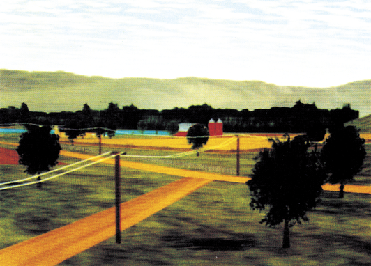
Kontrollfunktion mit Computer
Bei der Neuentwicklung von Flugzeugen und Flugzeugteilen verlangt das Luftfahrt-Bundesamt eine Statik-und Belastungsberechnung. Diese werden in der Abteilung CAD (Computer Aided Design) durchgeführt. Als Demonstrationsbeispiel stand uns ein Tragflügel zur Verfügung, an dem einige Standardrechnungen durchgeführt wurden. In Bild 12 sehen Sie die grafische Darstellung von Belastungszuständen an einem Tragflügel bei einer bestimmten Flugsituation. Jede Farbe entspricht einer bestimmten Belastung. Bevor ein Flugkörper zu einem ersten Probeflug starten darf, müssen Belastungs-Berechnungen zur Flugfreigabe beim Luftfahrt-Bundesamt in Braunschweig vorgelegt werden. Deswegen ist diese Abteilung auch bewußt, auf Grund seiner Kontrollfunktion, von der eigentlichen Konstruktion getrennt. Auch hier ist wieder die Sicherheit das erste Gebot.
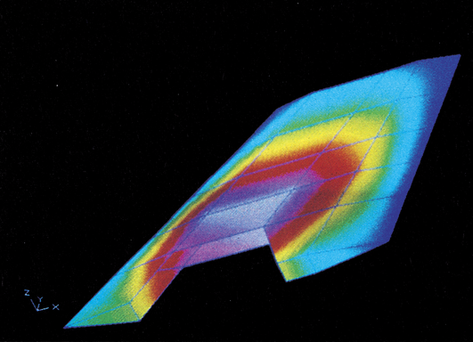
Computergrafik ist aie Zukunft
Zur MBB-Industrie gehört auch eine Grafik- und Design-Abteilung, in der einer der besten Grafik-Computer steht. Das Herz ist der Imagi-nator 380 TDM. Seine Leistungsstärke zeigt sich in der Auflösung von 8000 mal 8000 Punkten. Darstellbar sind 124 Farben aus einem Farbspektrum von 16,7 Millionen Möglichkeiten und 21 vorgegebenen Schriftarten. Ein Beispiel sehen Sie in Bild 13. Der Trend zur Computergrafik ist derzeit so groß, daß ein Unternehmen der Größe wie MBB, heute nicht mehr ohne eine eigene Grafikabteilung auskommen kann.
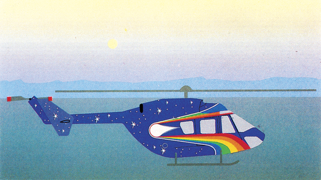
C64-Useraroup zum Nutzen der Firma
Die Firmenleitung erkannte schon recht früh, daß eine Förderung von Interessengruppen der Firma, auf die Zeit gesehen, viele Vorteile bringt. Deshalb wurde die Gründung einer C 64-User-Group vor 2 Jahren begrüßt und finanziell unterstützt. Ein- bis zweimal im Monat treffen sich die Mitglieder an einem Mittwoch zum Erfahrungsaustausch.
Warum überhaupt eine User-Group?
Es stand fest, daß die meisten Computer-Freaks einen C 64 besaßen, einige sich mit dem Computer gut auskannten und andere, die gerade anfingen, noch unsicher waren. Um den Anfängern zu helfen und den Profis neue Denkanstöße zu geben, entschloß man sich zur Gründung einer Interessengruppe.
An den Abenden werden selbstgeschriebene Programme vorgestellt, bestimmte Fehler bei der Programmierung besprochen und Lösungen gesucht, um entstandene Fehler zu beseitigen.
Des weiteren werden kommerzielle Programme vorgestellt und besprochen. Tips und Tricks zu diesen Programmen, die bei der Nutzung gefunden wurden, helfen anderen wiederum, diese Programme besser einzusetzen.
Ein entscheidender Aspekt ist die Aus- und Weiterbildung in der EDV, die dem Unternehmen direkt zugute kommt. Neben der EDV laufen auch Kurse über Assembler-Programmierung und das Kennenlernen von anderen Programmiersprachen.
Auch den Hardware-Freaks wird etwas geboten. Hier wurde eine in der 64'er veröffentlichte Schaltung, eine V.24-Schnittstelle, verbessert und nachgebaut.
Wir meinen, daß diese Form der Unterstützung seitens einer Firma ein lobenswertes Beispiel ist. Dieses zeigt auch die rege Beteiligung an dieser Interessengruppe, die derzeit aus zirka 50 Mitgliedern besteht.
Dem Formaldehyd auf der Spur
Eine Gruppe von Wissenschaftlern treibt aktiven Umweltschutz und Schutz des Menschen vor Schadstoffen. Dabei hilft Ihnen der C 64.
Das Institut für angewandte Biologie in Hamburg wurde vor fünf Jahren als gemeinnütziger Verein gegründet. Die Aufgabengebiete dieser Vereinigung liegen in der Überwachung der Gewässer- und Luftreinheit, der Landschaftsplanung mit der Erschließung von neuen Biotopen und der Erhaltung von gefährdeten Kleinbiotopen in Wohn- und Industriegebieten.
Das Institut unterhält, neben der Zentrale in Hamburg, zwei Nebenstellen, eine in Kiel und eine in Freiburg an der Unterelbe.
Alle Mitarbeiter des Instituts sind ehrenamtlich beschäftigt, die Ausnahme bilden die Biologen und Chemiker, die im Rahmen der ABM-Maßnahmen (Arbeits-Beschaffungs-Maßnahme) als bezahlte Vollzeitkräfte eingesetzt sind.
Die chemische Abteilung des Instituts befaßt sich mit folgenden Schwerpunkten:
Es werden von Firmen und Bürgern Untersuchungen in Auftrag gegeben, Gewässer zu kontrollieren. Diese Wasserproben werden dann auf Schwermetalle wie Quecksilber, Blei, Kupfer und nach Giften untersucht.
Arbeitsräume, Wohnungen und Gartenanlagen werden auf Schadstoffe untersucht, die für den Menschen gefährlich sind, wie Formaldehyde, flüchtige Halogene und Kohlenwasserstoffe. Insbesondere die Aufspürung von krebserzeugenden Formaldehyd-Dämpfen nimmt derzeit einen Großteil der Untersuchungen ein.
In dem Bereich der Bodenanalyse wird der Erdboden auf Verunreinigungen durch Schwermetalle und Biogifte untersucht.
Die Spürhunde sind unterwegs
Alle erstellten Analysen werden manuell und mit Hilfe des C 64 ausgewertet. Bei größeren Meßreihen werden die Ergebnisse in Diagramme umgerechnet und ausgedruckt.
Die biologische Abteilung beschäftigt sich damit, bestehende Biotope zu schützen, gefährdete Pflanzen und Tiere zu erhalten und in der Landschaftsplanung für Städte eine Ausgewogenheit zwischen bebautem Gelände und Grünanlagen zu schaffen. Dabei werden in Grünanlagen neue und bestehende Biotope integriert oder erhalten.
Auf Anforderung werden Gutachten erstellt, falls bestehende Biotope geändert oder erweitert werden sollen. Besonderer Wert wird dabei auf die Randbiotope von Kleingewässern wie Fischteiche, Tümpel oder Seen gelegt. Dort sind in der Regel Kleinlebewesen und Pflanzen angesiedelt, die vom Aussterben bedroht sind.
Die Planung für die Zukunft ist, durch die Erweiterung des Computersystems alle Meßergebnisse, die gemacht werden, ortsbezogen zu speichern. Dazu wird die Freie und Hansestadt Hamburg, das Bundesland Schleswig-Holstein und der Norden des Bundeslandes Niedersachsen in kleine Quadrate von 500 x 500 m zerlegt. Dieser Raster erlaubt es, daß zu jeder Zeit alle Daten, die in einem Feld je gemacht wurden, abgefragt werden können. Das erleichtert den Verwaltungsaufwand und ermöglicht es, Auskünfte über Langzeitänderungen zu geben.
Der dritte Arbeitsbereich des Instituts ist die Ausbildung von Wissenschaftlern auf Kleincomputeranlagen. Hierunter fällt ein Basic-Einführungskurs auf dem Commodore-Computer C 64.
Der vierte und letzte Bereich, wohl der wichtigste überhaupt, ist die Öffentlichkeitsarbeit. Mit Video- und Diavorführungen, Vorträgen, Ausstellungen und Dis-kussionsrunden wird die Öffentlichkeit auf die Probleme unser gefährdeten Umwelt aufmerksam gemacht. Auch hier findet der C 64 mit der Unterstützung von Personal Computern sein Haupteinsatzgebiet. Er wird in der Verwaltung von Adreßdatei-en und in der Textverarbeitung eingesetzt.
Resümee
Sicher ist, daß in der Forschungund Technik ohne eine Großrechenanlage schnell die Leistungsgrenzen eines Institutes erreicht sind. Aber auch Kleincomputer wie der C 64 oder C 128 und Personal Computer wie ein IBM-PC übernehmen viele der kleineren Arbeiten, wie die Meßwerterfassung, die Gerätesteuerung und Regel- und Überwachungsarbeiten. Aufgrund des Preis-/Leistungsverhält-nisses sind die Computer für diese Aufgaben prädestiniert und nach unserer Meinung auch sinnvoll einzusetzen.
Institut für angewandte Biologie, der Arbeitsgemeinschaft zur Förderung angewandter biologischer Forschung e.V Stresemannstraße 384a, 2000 Hamburg 50, Tel. 0 40/89 88 48